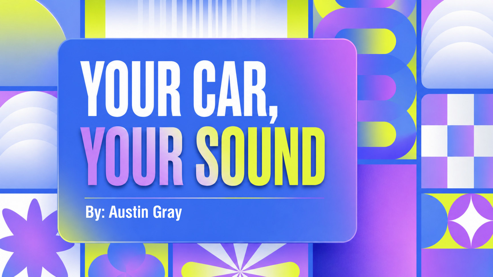
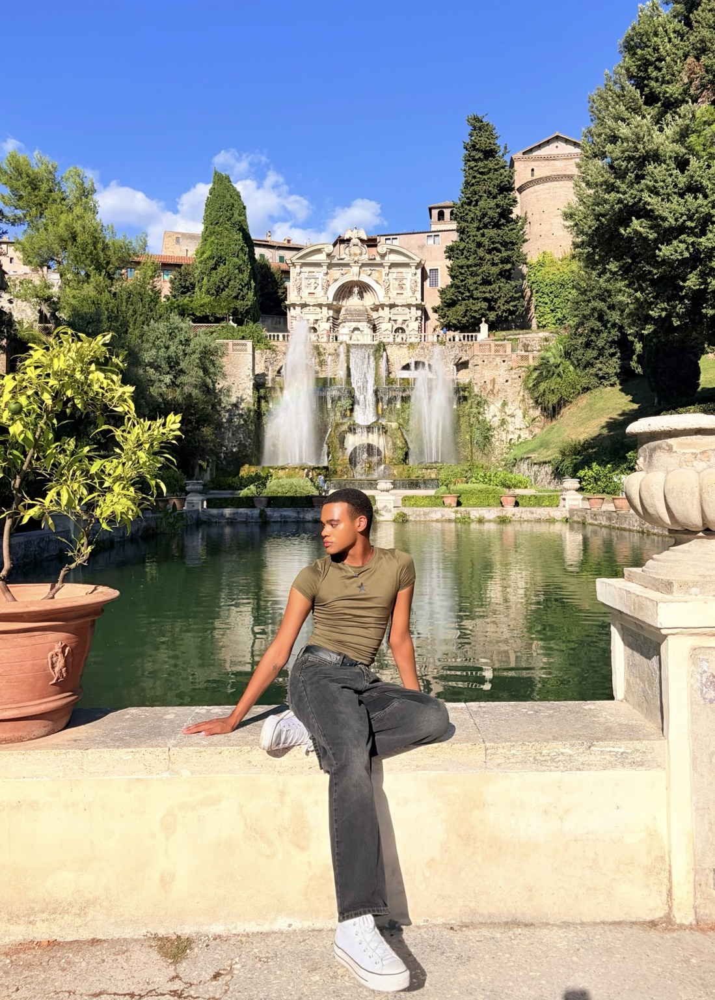
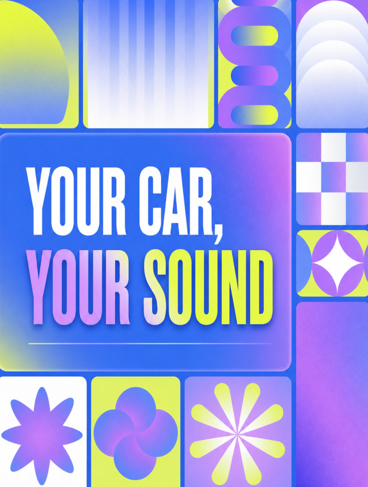
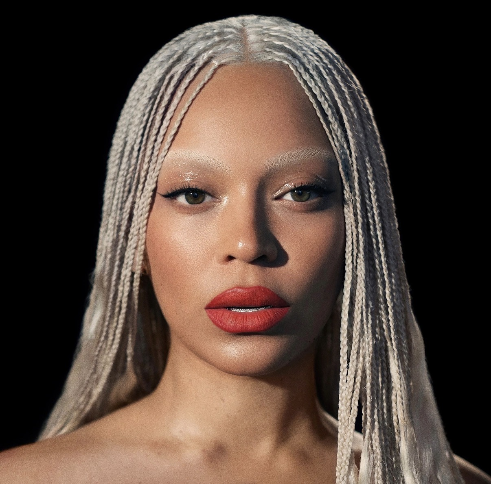
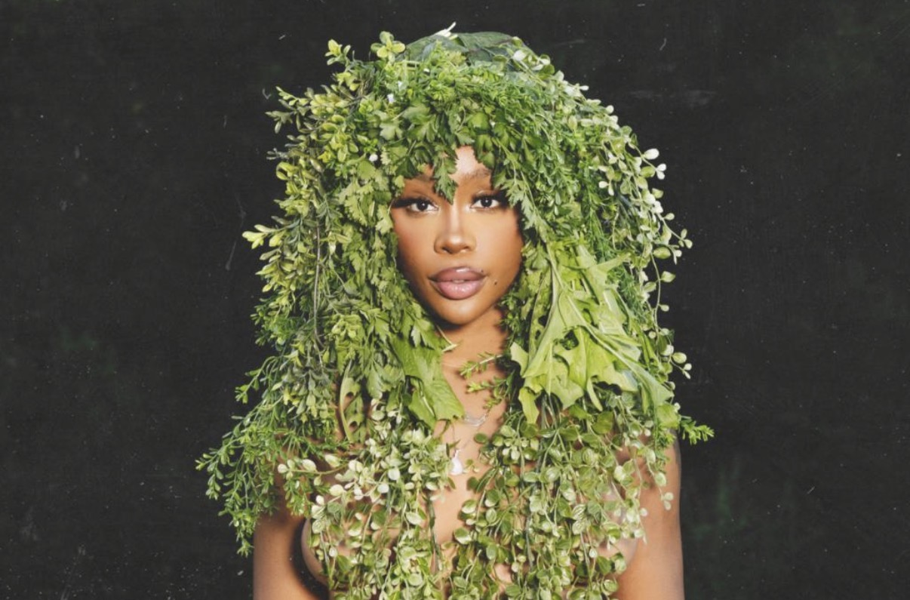
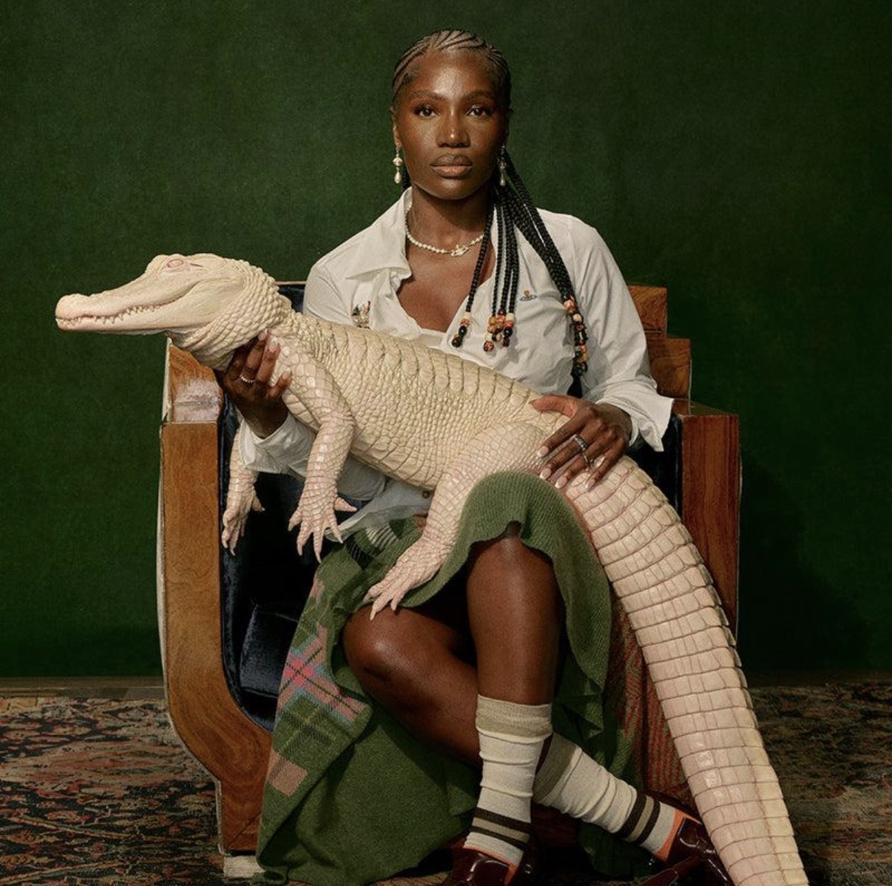
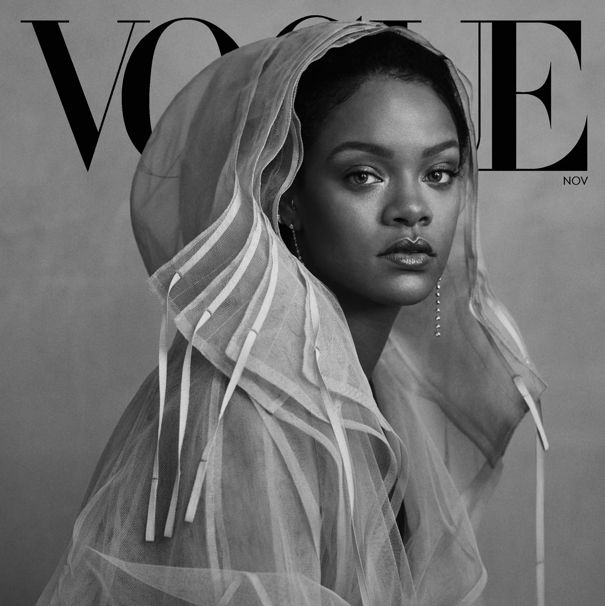
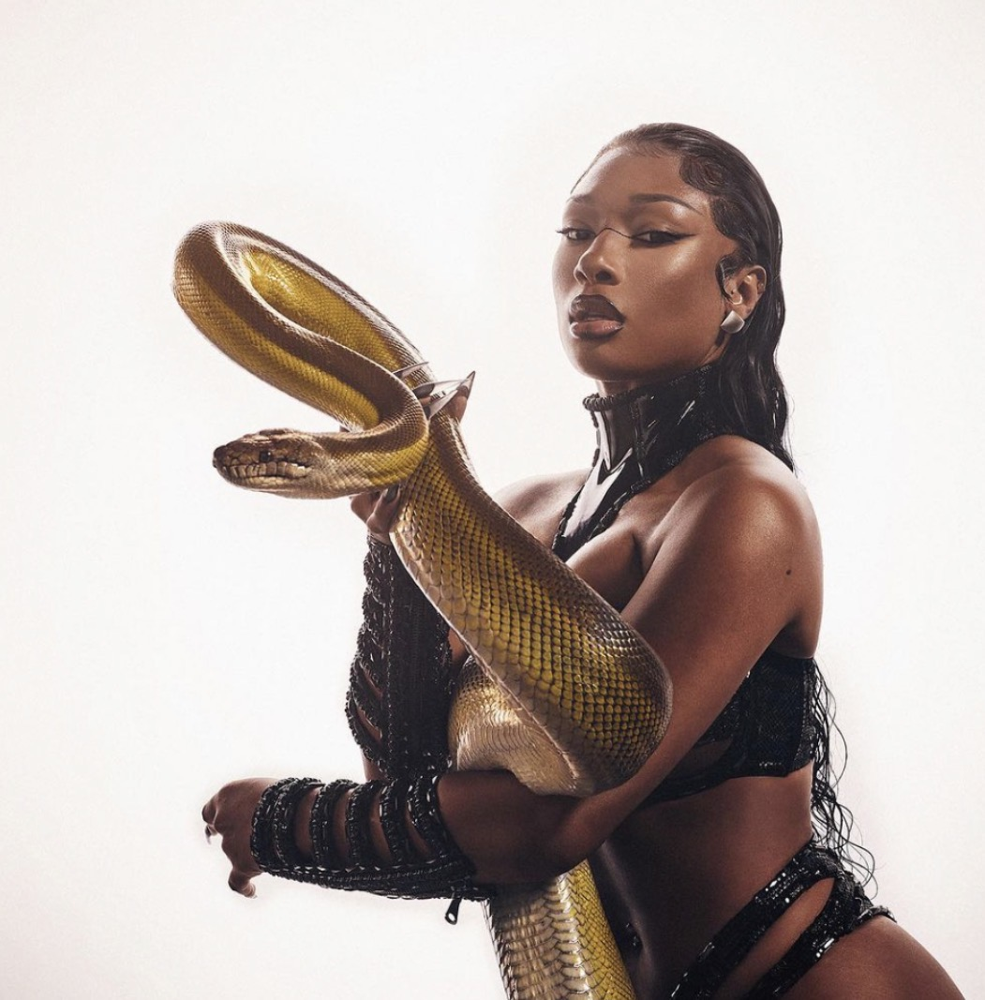
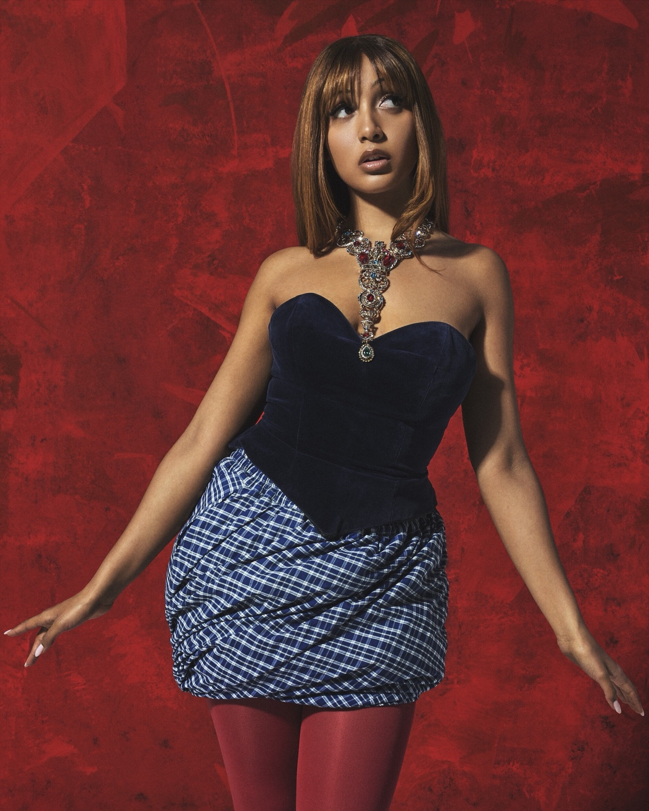
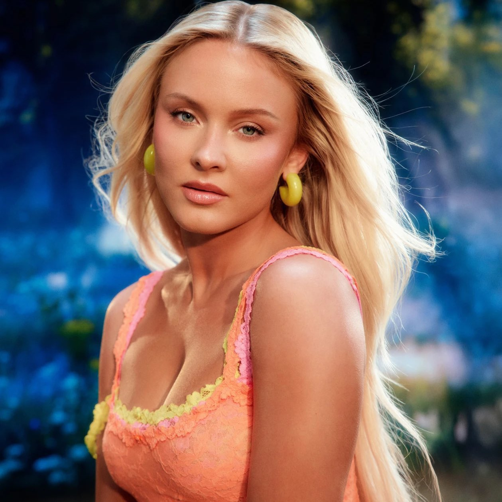

YOUR CAR, YOUR SOUND | CAMPAIGN OVERVIEW
A creative PR campaign designed to connect SiriusXM with Gen Z audiences through personalized listening experiences and digital engagement.
VIEW CAMPAIGN OVERVIEW ↗PR PROFESSIONAL · CREATIVE · MUSIC LOVER · STORYTELLER
I'm Austin Gray — a communications and public relations creative with a passion for music, culture, and meaningful storytelling. I believe in the power of authentic storytelling and the impact of creative communication.
EXPLORE MY WORK ⟶I'm Austin Gray, a public relations and communications creative at St. John's University with a love for music, culture, and storytelling. I'm interested in the ways thoughtful communication brings people, brands, and ideas together.
My experience across PR, marketing, and media has helped me build a creative, audience-focused approach to storytelling. I'm always looking for new ways to connect culture and communication.


A creative PR campaign designed to connect SiriusXM with Gen Z audiences through personalized listening experiences and digital engagement.
VIEW CAMPAIGN OVERVIEW ↗
A deeper look at the Your Car, Your Sound campaign, exploring its strategic development, media outreach, and creative materials.
VIEW BREAKDOWN & MEDIA KIT ↗
Project title and description
ADD PROJECT DETAILS
Project title and description
ADD PROJECT DETAILS
Project title and description
ADD PROJECT DETAILS
Project title and description
ADD PROJECT DETAILS
Upload a press release sample
ADD WRITING SAMPLE
Upload a media pitch sample
ADD WRITING SAMPLE
Upload social captions or copy
ADD WRITING SAMPLE
Upload an article or feature
ADD WRITING SAMPLE
Upload a strategy sample
ADD WRITING SAMPLE
Upload a research or insights piece
ADD WRITING SAMPLE
Upload messaging or campaign copy
ADD WRITING SAMPLE
Upload another writing sample
ADD WRITING SAMPLETHE ARTISTS, THE MUSIC, AND THE MOMENTS
MY TOP ARTISTS

BEYONCÉ
SZA
DOECHII
RIHANNA
MEGAN THEE STALLION
PINKPANTHERESS
ZARA LARSSON
Here's a taste of some of the songs, artists, and albums that keep me inspired and grounded throughout the ups and downs of life.
MY PLAYLIST ⟶